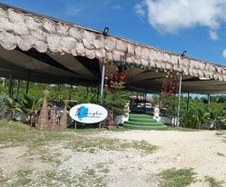
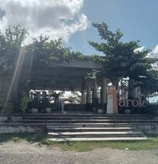
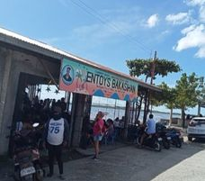
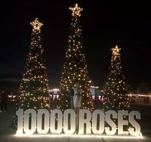
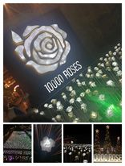
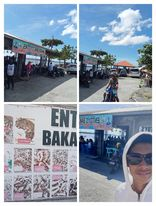
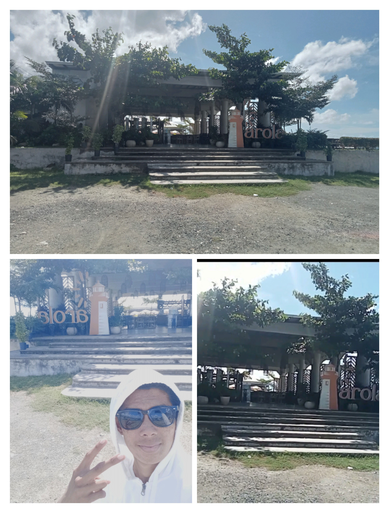
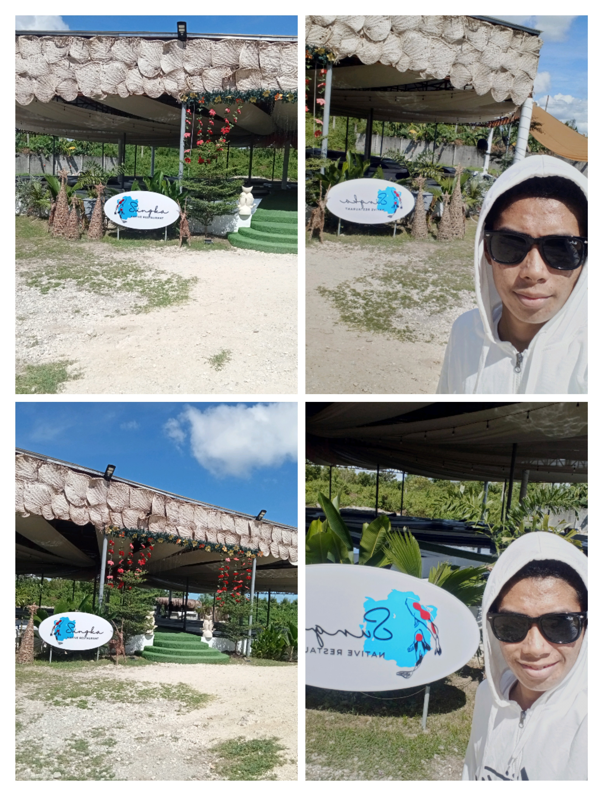

|  |  |  |  |
TOURIST SPOTS IN CORDOVA,CEBU! |
|||
10,000 ROSES |
|
|  |
THE 10,000 ROSES CAFE'
|
a Korean-owned café |
|
ENTOY'S BAKASIHAN |
|
|  |
THE ENTOY'S BAKASIHAN
|
Entoy's Bakasihan is a humble eatery specializing in eel |
|
PAROLA |
|
|  |
THE PAROLA
|
Malingaw sa tinuod nga pagkaong Filipino ug tan-awa ang talagsaong talan-awon sa kadagatan sa Parola Seaview Restaurant sa Cordova. | |
SUNGKA |
|
|  |
THE
|
Usa ka bag-ong giablihan nga restawran nga gitukod sa palibot sa usa ka Koi pond, nga nagtanyag usa ka talagsaon nga kasinatian sa pagpangaon nga gilibutan sa mga isda nga Koi. |
|